# Packages
packages = c('dplyr','ggplot2','tsibble','fable','feasts',
'gridExtra','tseries','fable.prophet','plotly')
lapply(packages, library, character.only=TRUE)English Version
U.S. Avocado Sales Volume Forecast
The following document presents the development of different forecasts for avocado sales volume in the United States. The document is divided by sections related to the type of process or forecast.
Models:
Exponential Smoothing
ARIMA
STL Decomposition
Prophet
Neural Network Auto-Regression
PACKAGES
Packages loaded in the library required for this analysis.
DATA PREPARATION
First, the loaded database is prepared in order to select only the data of the series of interest, group the information by months and convert the units of the sales volume in pounds to tons. We are interested in knowing the total US monthly volume of organic avocados.
serie = avocado_data %>%
select(Date, TotalVolume, type, region) %>%
filter(type == "organic" & region == "TotalUS") %>%
mutate(Month = yearmonth(Date)) %>%
group_by(Month) %>% summarise(Volume = sum(TotalVolume)) %>%
filter(row_number() <= n()-1) %>% #Remove last row due to incomplete information
as_tsibble(index = Month)
# Convert volume from pounds to tons
serie$Volume = (serie$Volume * 0.453592)/1000ANALYZE ORIGINAL SERIES, SEASONALITY AND HETEROSCEDASTICITY.
Original series
First, the original series is analyzed and the presence of seasonality is investigated.
# Plot Original Series
graf_san = serie %>% autoplot(Volume) + geom_point() +
labs(y = "Thousands of tons", x = "",
title = "Avocado sales volume in the U.S., 2015-2023")
ggplotly(graf_san)It can be seen that the series has a positive trend, as well as the possible presence of heteroscedasticity and seasonality.
Seasonality
The following seasonality plots with the gg_season() and gg_subseries() functions confirm the presence of seasonality.
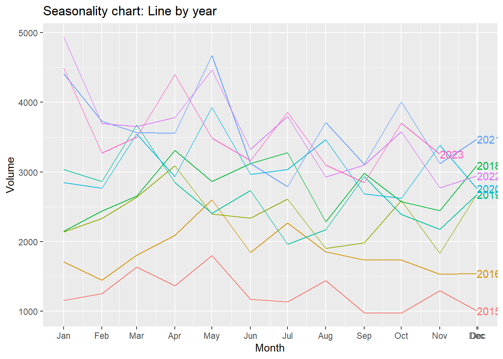
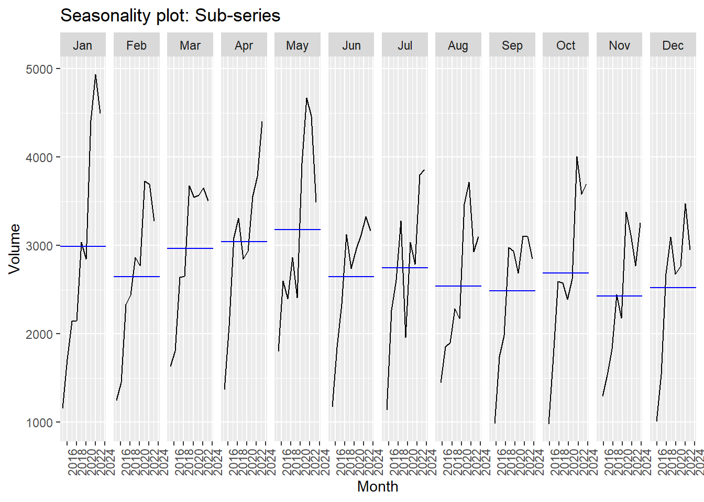
Heterocedasticity
When suspecting the presence of heteroscedasticity, a first difference is drawn to see how it behaves over time.
# First Difference
serie_dif =
serie %>%
mutate(Difference = difference(Volume, order_by = Month)) %>%
select(-Volume) %>%
filter(row_number() > 1)
# Graficar First Difference
graf_serie_dif = serie_dif %>% autoplot(Difference) +
geom_hline(yintercept = mean(serie_dif$Difference),lty=2,col="red") +
geom_point() +
labs(title = "First Difference", x="")
ggplotly(graf_serie_dif)Looking at the plot of the first difference confirms the presence of heteroscedasticity as the variance increases over time. Therefore, it will be necessary to perform some transformation.
SERIES TRANSFORMATION
A Box-Cox transformation will be performed to deal with the heteroscedasticity of the series for which the Guerrero method will be used to obtain it.
# Estimating Lambda
lambda =
serie %>%
features(Volume, features = guerrero) %>%
pull(lambda_guerrero)
# Transformed Series
graf_st = serie %>%
autoplot(box_cox(Volume,lambda)) +
geom_point() +
labs(
title = "Box-Cox transformed series",
x ="", y= ""
)
# Original and transformed series comparison graphs
grid.arrange(graf_san,graf_st)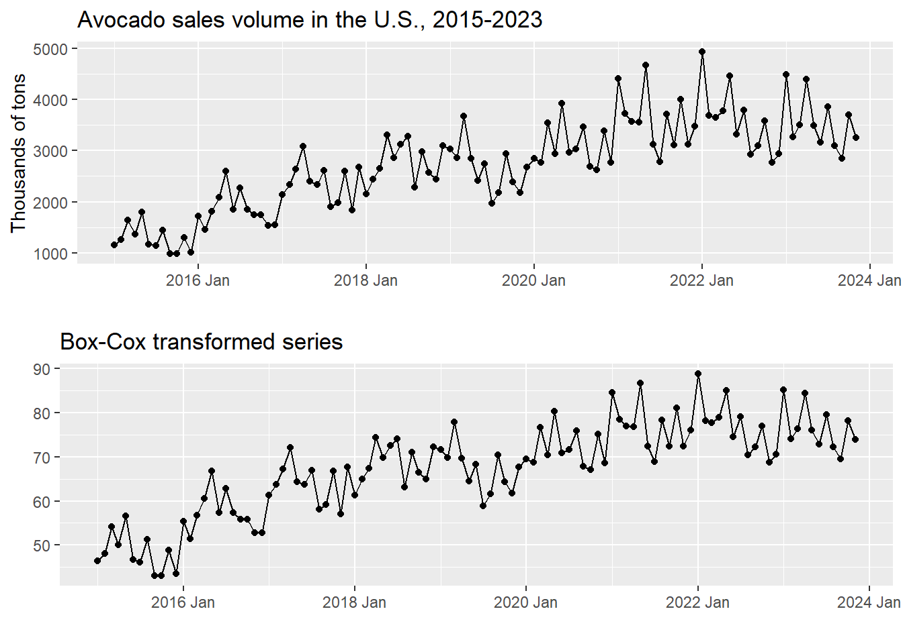
A comparison of the first difference of the original series and the transformed series is also used to show how heteroscedasticity is corrected by the transformation.
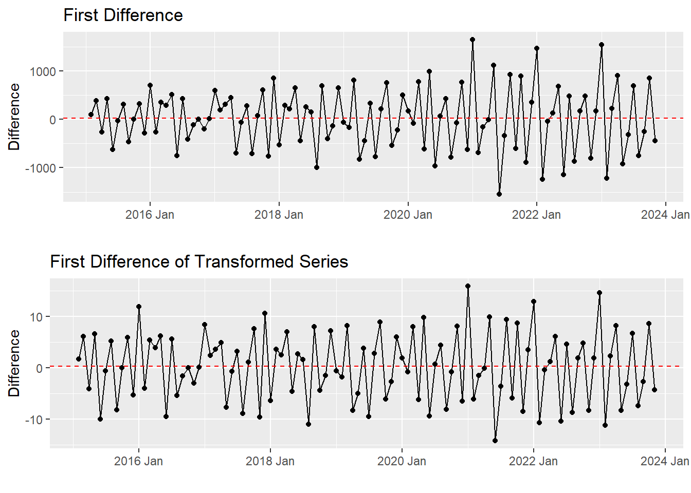
SERIES DECOMPOSITION
The following is a decomposition of the series into its various components using the STL method, which stands for Seasonal and Trend decomposition using Loess.
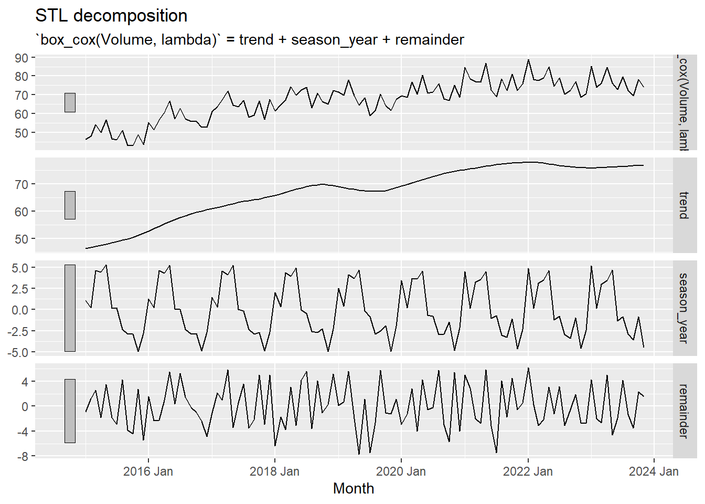
To better identify trend changes in the trend-cycle indicator, a graph is made where it changes color according to its direction.
# Trend-Cycle
trend_cycle =
serie %>%
model(STL(box_cox(Volume,lambda))) %>%
components() %>%
select(Month, trend) %>%
mutate(dif = difference(trend))
# Shifting Color for Plotting
ccpg = c()
#Note: One period is lagged to coincide with the start of the changeover.
for (i in 2:nrow(trend_cycle)){
if(trend_cycle$dif[i] >= 0){
ccpg = append(ccpg, 'black')
}else{
ccpg = append(ccpg, 'red')
}
}
#last color equal to the last color available
ccpg = append(ccpg, ccpg[length(ccpg)])
# Trend-Cycle Graph
trend_cycle %>%
select(-dif) %>%
mutate(trend = inv_box_cox(trend,lambda)) %>%
ggplot(aes(x = Month, y = trend)) +
geom_line(col=ccpg, lwd=1.5) +
labs(title = "Avocado Sales Volume Trend-Cycle",
subtitle = "United States, 2015 - 2023",
y = "Thousands of tons", x = "",
)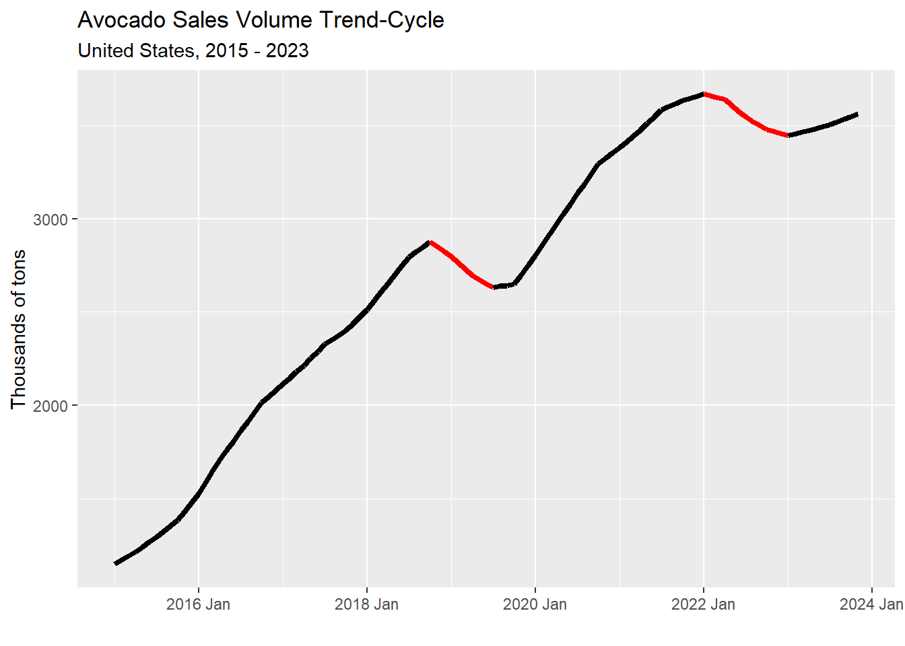
TRAINING AND TEST DATA SETS
To evaluate the accuracy of the forecasts, the series is separated into a training data set and a test data set. For this exercise we seek to forecast the following 10 periods (Months).
# Steps to forecast
pap = 10
# Training Data
train_ini = substr(as.character(as.Date(serie$Month[1])),1,7)
train_end = substr(as.character(as.Date(serie$Month[nrow(serie)-pap])),1,7)
train_data = serie %>%
filter_index(train_ini ~ train_end)
# Test Data
test_ini = substr(as.character(as.Date(serie$Month[nrow(serie) - pap + 1])),1,7)
test_data = serie %>% filter_index(test_ini ~.)EXPONENTIAL SMOOTHING
Tentative Identification of the Model
The first model to review is the Exponential Smoothing model for which we are going to use the characteristics of the behavior of the series previously identified to give us an idea of what would be the best model for the series we have.
Identified characteristics:
Trend
Seasonality
Heterocedasticity
Since these characteristics are detected, the following models will be analyzed:
ETS(M,A,M)
ETS(M,Ad,M)
In addition, it is reviewed whether the Automatic Model represents a good alternative.
# Models to Review
mod_se = train_data %>%
model(
Auto = ETS(Volume), # Automatic model <ETS(M,Ad,A)>
MAM = ETS(Volume ~ error("M") + trend("A") + season("M")),
MAdM = ETS(Volume ~ error("M") + trend("Ad") + season("M")),
)
# Information Criteria (AICc)
glance(mod_se) %>% arrange(AICc)# A tibble: 3 × 9
.model sigma2 log_lik AIC AICc BIC MSE AMSE MAE
<chr> <dbl> <dbl> <dbl> <dbl> <dbl> <dbl> <dbl> <dbl>
1 Auto 0.0243 -792. 1620. 1628. 1666. 156246. 158324. 0.117
2 MAM 0.0249 -795. 1625. 1633. 1669. 168550. 176817. 0.121
3 MAdM 0.0260 -795. 1626. 1635. 1672. 155850. 159705. 0.121Although the ETS(M,Ad,A) automatic model seems to show a better information criterion of AICc, it uses an additive stationarity, which given the heteroscedasticity of the model is not recommended, so we will select the ETS(M,Ad,M) model, which makes more sense given the behavior of the series.
When evaluating the accuracy of the models, it is observed that the ETS(M,Ad,M) model has a better performance than the ETS(M,A,M) model, so we will use the latter, which is an Exponential Smoothing with Damped Trend, Multiplicative Stationarity and Multiplicative Errors.
# A tibble: 3 × 4
.model RMSE MAE MAPE
<chr> <dbl> <dbl> <dbl>
1 Auto 437. 397. 11.8
2 MAdM 467. 417. 12.3
3 MAM 592. 452. 13.7Model Validation
Once the model to be used has been identified, it must be validated by analyzing its residuals. First we will review the assumptions of \(E[mu]=0\) and homoscedasticity.
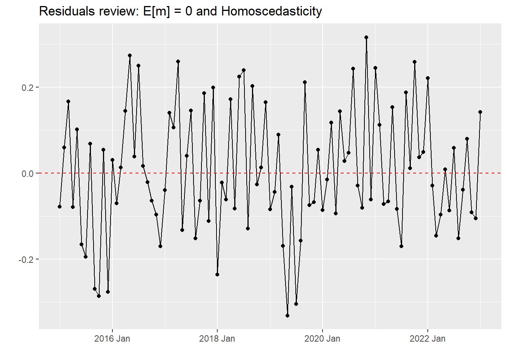
It can be seen that these assumptions are fulfilled, now it remains to see the assumption of normality.
Residuals normality check
We seek to analyze by means of histogram, quantile-quantile plots and the Jarque-Bera test the assumption of normality of the residuals of the model.
# Residuals histogram
hist_plot = residuals %>% ggplot(aes(x = .innov)) +
geom_histogram(bins = 20, lwd = 1.5,col = 'white', fill = 'slategrey') +
labs(title = "Residuals Normality Check: Histogram and Quantile-Quantile",
x = "Residuals", y ="Frequency")
# Q-Q Plot
qq_plot = residuals %>% ggplot(aes(sample = .innov)) +
stat_qq(col = 'slateblue') + stat_qq_line() +
labs(x = "Theoretical Quantiles", y ="Sample Quantiles")
grid.arrange(hist_plot,qq_plot)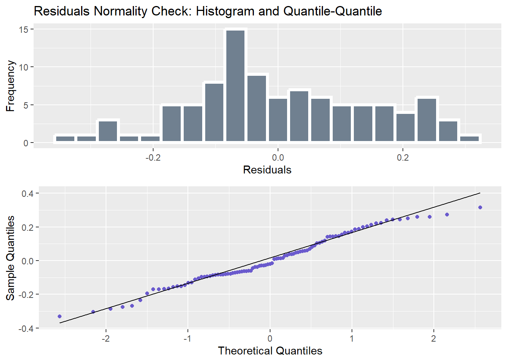
# Jarque-Bera Test
# p-value > 0.05 indicates that it cannot be rejected as normally distributed.
jarque.bera.test(residuals$.innov)
Jarque Bera Test
data: residuals$.innov
X-squared = 1.4323, df = 2, p-value = 0.4886It may be debatable whether the assumption of normality can be considered valid given the plots and the test that indicates that it cannot be rejected that the residuals are normally distributed.
In this situation, two alternatives are offered for the generation of confidence intervals. They can be performed assuming normal distribution, or also by means of a Bootstrap simulation.
Forecast Charts
# Plot Forecast vs. Actual Values (Normal Distribution Assumption)
graf_se_dn = mod_se %>% select(MAdM) %>% forecast(h = pap) %>%
autoplot(
serie %>% filter(Month >= yearmonth("2019-01-01")),
lwd = 1.5,
level = 80
) +
labs(title = "Exponential Smoothing Forecast ETS(M,Ad,M)",
subtitle = "ETS(M,Ad,M) Model with Normally Distributed Intervals",
x = "")
# Plot Forecast vs. Actual Values (Bootstrap)
graf_se_boot = mod_se %>% select(MAdM) %>% forecast(h = pap, bootstrap = TRUE) %>%
autoplot(
serie %>% filter(Month >= yearmonth("2019-01-01")),
lwd = 1.5,
level = 80
) +
labs(subtitle = "ETS(M,Ad,M) Model with Bootstrap Intervals",
x = "")
grid.arrange(graf_se_dn,graf_se_boot)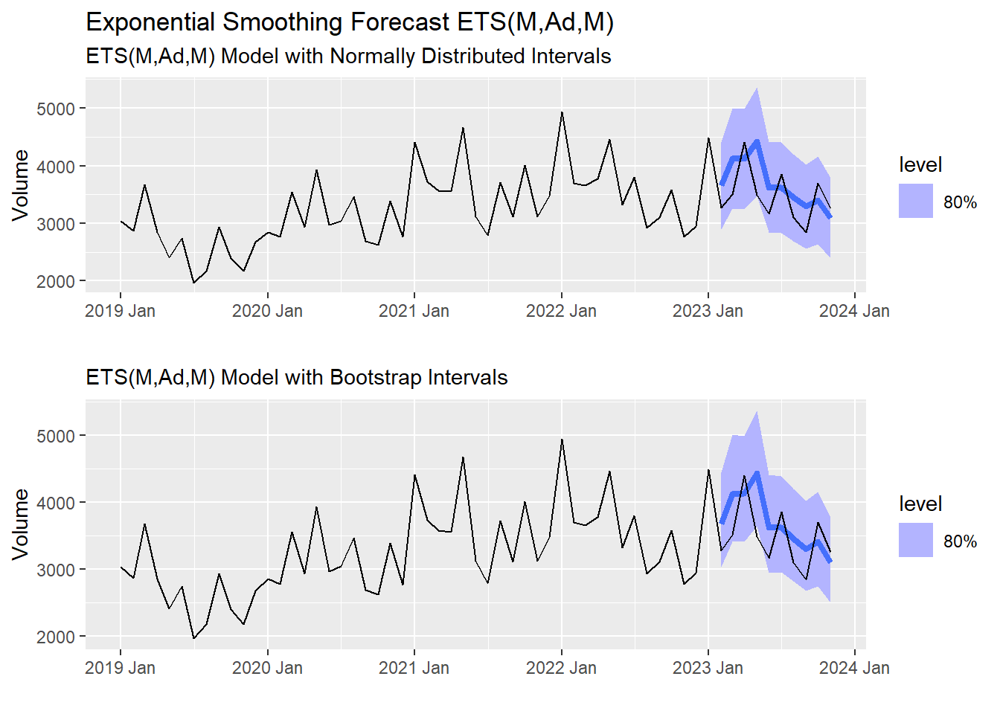
Note that no major differences are observed between the two types of intervals.
ARIMA
The second model to review is the Seasonal ARIMA or SARIMA for which we will also take advantage of the previously identified characteristics of the behavior of the series to give us an idea of which would be the best models. As the series has trend and seasonality, one or more differences may need to be drawn. On the other hand, the Box-Cox transformation can be used to correct for heteroscedasticity.
Tentative Model Identification
First we need the series to be stationary, for which we calculated seasonal differences and first difference to identify if it is convenient to estimate more than one difference and if the first difference or the seasonal difference is preferred. When applying seasonal difference, it was not enough and another difference had to be computed On the other hand, by estimating only the first difference, it seems to be enough to make the series stationary.
# diff(box_cox(Volume,lambda)) Mean for stationarity graph
m_dif= train_data %>%
mutate(dif_vol = difference(box_cox(Volume,lambda))) %>%
pull(dif_vol) %>% mean(na.rm = TRUE)
# Plot of Differences Required for Stationarity
train_data %>% autoplot(
box_cox(Volume,lambda) %>%
difference(1)
) + geom_point() +
labs(
title = "Stationarity Graph",
x = "", y = ""
) +
geom_hline(yintercept = m_dif, lty=2, col="red")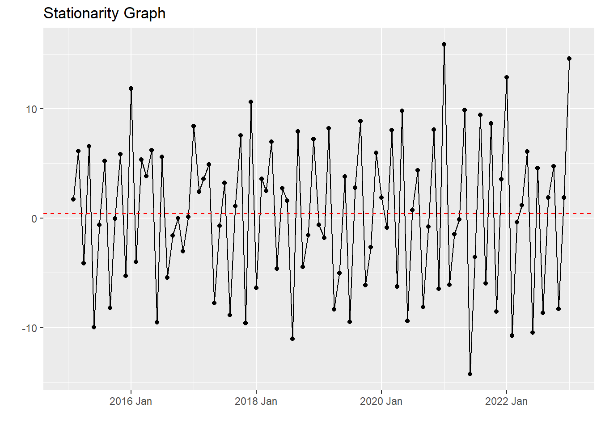
The Unit Root and Seasonal Strength tests can also be used to detect which differences would be more convenient to calculate.
# Seasonal Difference Test
# seasonal_strength_year >= 0.64 indicates to calculate seasonal difference
train_data %>% features(box_cox(Volume,lambda), feat_stl)# A tibble: 1 × 9
trend_strength seasonal_strength_year seasonal_peak_year seasonal_trough_year
<dbl> <dbl> <dbl> <dbl>
1 0.877 0.506 5 11
# ℹ 5 more variables: spikiness <dbl>, linearity <dbl>, curvature <dbl>,
# stl_e_acf1 <dbl>, stl_e_acf10 <dbl># Number of Seasonal Differences Required
train_data %>% features(box_cox(Volume,lambda), unitroot_nsdiffs)# A tibble: 1 × 1
nsdiffs
<int>
1 0# Unit Root Test
# kpss_pvalue < 0.05 indicates calculate difference
train_data %>% features(box_cox(Volume,lambda), unitroot_kpss)# A tibble: 1 × 2
kpss_stat kpss_pvalue
<dbl> <dbl>
1 2.08 0.01# Number of Differences Required
train_data %>% features(box_cox(Volume,lambda), unitroot_ndiffs)# A tibble: 1 × 1
ndiffs
<int>
1 1The various tests indicate that the recommended approach would be not to calculate seasonal difference and to calculate first difference.
ACF & PACF
The next step would be to review the Sample and Partial Autocorrelation plots to identify tentative models.
# Sample and Partial Autocorrelation Function Plots: ACF y PACF
acf_plot = autoplot(ACF(train_data, difference(box_cox(Volume,lambda)), lag_max = 36)) +
labs(y = "ACF", x="", title = "Sample and Partial Autocorrelation Functions: ACF and PACF")
pacf_plot = autoplot(PACF(train_data, difference(box_cox(Volume,lambda)), lag_max = 36)) +
labs(y = "PACF", x= "Lags")
grid.arrange(acf_plot,pacf_plot)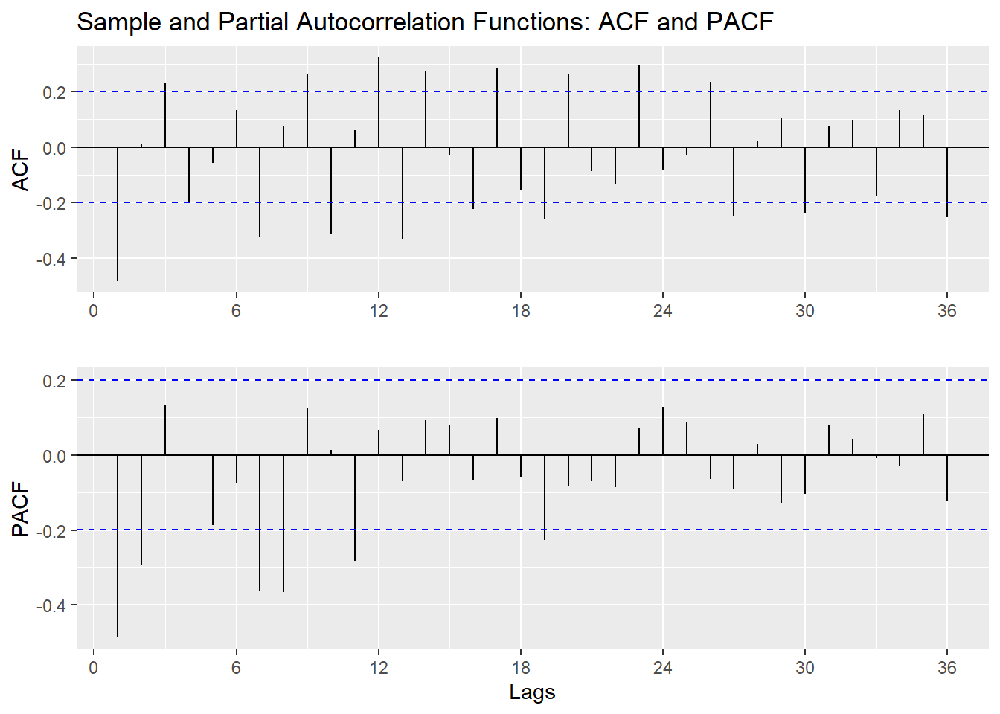
Model Estimation
Different models were estimated based on the lags shown in the ACF and PACF and the analysis of residuals.
# Estimate Model (d=1,D=0)
mod_arima = train_data %>%
model(
m210_002 = ARIMA(box_cox(Volume,lambda) ~ 0 + pdq(2,1,0) + PDQ(0,0,2)),
m011_002 = ARIMA(box_cox(Volume,lambda) ~ 0 + pdq(0,1,1) + PDQ(0,0,2)),
m810_002_c = ARIMA(box_cox(Volume,lambda) ~ 1 + pdq(8,1,0) + PDQ(0,0,2)),
m217_002_c = ARIMA(box_cox(Volume,lambda) ~ 1 + pdq(2,1,7) + PDQ(0,0,2)),
m312_002 = ARIMA(box_cox(Volume,lambda) ~ 0 + pdq(3,1,2) + PDQ(0,0,2)),
m119_002 = ARIMA(box_cox(Volume,lambda) ~ 0 + pdq(1,1,9) + PDQ(0,0,2))
)
# Models sorted by AICc
glance(mod_arima) %>% arrange(AICc)# A tibble: 6 × 8
.model sigma2 log_lik AIC AICc BIC ar_roots ma_roots
<chr> <dbl> <dbl> <dbl> <dbl> <dbl> <list> <list>
1 m810_002_c 20.2 -278. 580. 583. 610. <cpl [8]> <cpl [24]>
2 m217_002_c 19.4 -277. 580. 584. 613. <cpl [2]> <cpl [31]>
3 m210_002 21.7 -287. 584. 585. 597. <cpl [2]> <cpl [24]>
4 m119_002 19.6 -277. 581. 585. 614. <cpl [1]> <cpl [33]>
5 m011_002 22.8 -290. 587. 588. 597. <cpl [0]> <cpl [25]>
6 m312_002 22.2 -286. 588. 590. 609. <cpl [3]> <cpl [26]># Forecast Accuracy
mod_arima %>% forecast(h = pap) %>% accuracy(test_data) %>%
select(.model,RMSE,MAE,MAPE) %>% arrange(MAPE)# A tibble: 6 × 4
.model RMSE MAE MAPE
<chr> <dbl> <dbl> <dbl>
1 m312_002 413. 328. 9.20
2 m119_002 423. 338. 9.56
3 m810_002_c 417. 336. 10.2
4 m210_002 486. 386. 10.7
5 m011_002 516. 412. 11.5
6 m217_002_c 674. 587. 17.9 Their analysis was separated by differentiation for comparability.
# Estimate Model (d=1,D=1)
mod_arima = train_data %>%
model(
m119_110 = ARIMA(box_cox(Volume,lambda) ~ 0 + pdq(1,1,9) + PDQ(1,1,0)),
m119_011 = ARIMA(box_cox(Volume,lambda) ~ 0 + pdq(1,1,9) + PDQ(0,1,1))
)
# Models sorted by AICc
glance(mod_arima) %>% arrange(AICc)# A tibble: 2 × 8
.model sigma2 log_lik AIC AICc BIC ar_roots ma_roots
<chr> <dbl> <dbl> <dbl> <dbl> <dbl> <list> <list>
1 m119_011 22.9 -251. 525. 530. 554. <cpl [1]> <cpl [21]>
2 m119_110 23.5 -252. 527. 532. 556. <cpl [13]> <cpl [9]> # Forecast Accuracy
mod_arima %>% forecast(h = pap) %>% accuracy(test_data) %>%
select(.model,RMSE,MAE,MAPE) %>% arrange(MAPE)# A tibble: 2 × 4
.model RMSE MAE MAPE
<chr> <dbl> <dbl> <dbl>
1 m119_110 425. 324. 9.18
2 m119_011 502. 411. 12.2 Y después se eligieron los mejores modelos.
# A tibble: 4 × 8
.model sigma2 log_lik AIC AICc BIC ar_roots ma_roots
<chr> <dbl> <dbl> <dbl> <dbl> <dbl> <list> <list>
1 m119_110 23.5 -252. 527. 532. 556. <cpl [13]> <cpl [9]>
2 m810_002_c 20.2 -278. 580. 583. 610. <cpl [8]> <cpl [24]>
3 m119_002 19.6 -277. 581. 585. 614. <cpl [1]> <cpl [33]>
4 m312_002 22.2 -286. 588. 590. 609. <cpl [3]> <cpl [26]># A tibble: 4 × 4
.model RMSE MAE MAPE
<chr> <dbl> <dbl> <dbl>
1 m119_110 425. 324. 9.18
2 m312_002 413. 328. 9.20
3 m119_002 423. 338. 9.56
4 m810_002_c 417. 336. 10.2 The same process was followed for the validation of each model.
Model Validation
The statistical significance of its components was reviewed and their residuals were extracted to analyze whether the assumptions were met.
# Model to Review
mar = "m312_002"
residuals = augment(mod_arima) %>% filter(.model == mar) # Residuals of the Model to Review
# Review significance of values
#tidy(mod_arima)
mod_arima %>% select(mar) %>% tidy() %>% print(n=20)# A tibble: 7 × 6
.model term estimate std.error statistic p.value
<chr> <chr> <dbl> <dbl> <dbl> <dbl>
1 m312_002 ar1 -0.0251 0.256 -0.0980 0.922
2 m312_002 ar2 0.276 0.149 1.85 0.0671
3 m312_002 ar3 0.357 0.133 2.68 0.00873
4 m312_002 ma1 -0.731 0.251 -2.91 0.00450
5 m312_002 ma2 -0.169 0.190 -0.888 0.377
6 m312_002 sma1 0.511 0.110 4.65 0.0000108
7 m312_002 sma2 0.518 0.153 3.39 0.00102 The residuals were plotted so that the assumptions of \(E[mu]=0\) and homoscedasticity were met.
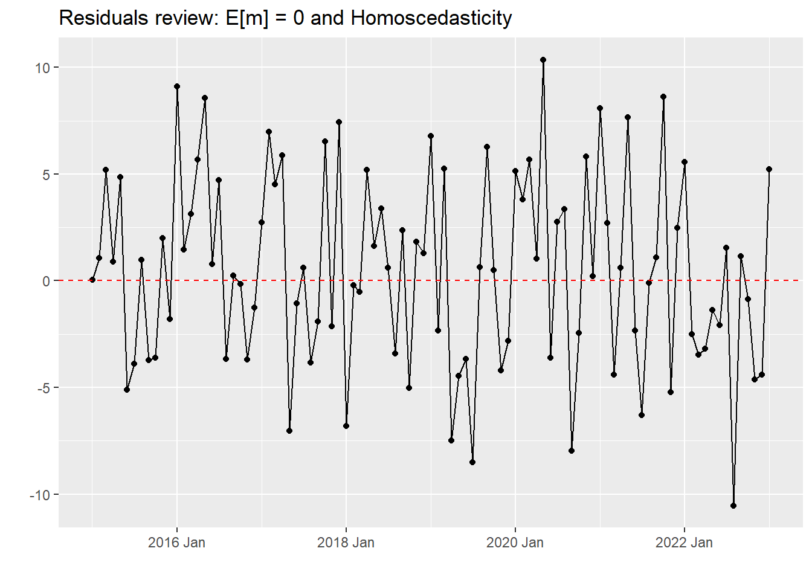
ACF and PACF plots of the residuals were plotted to check for remaining autocorrelation in the model.
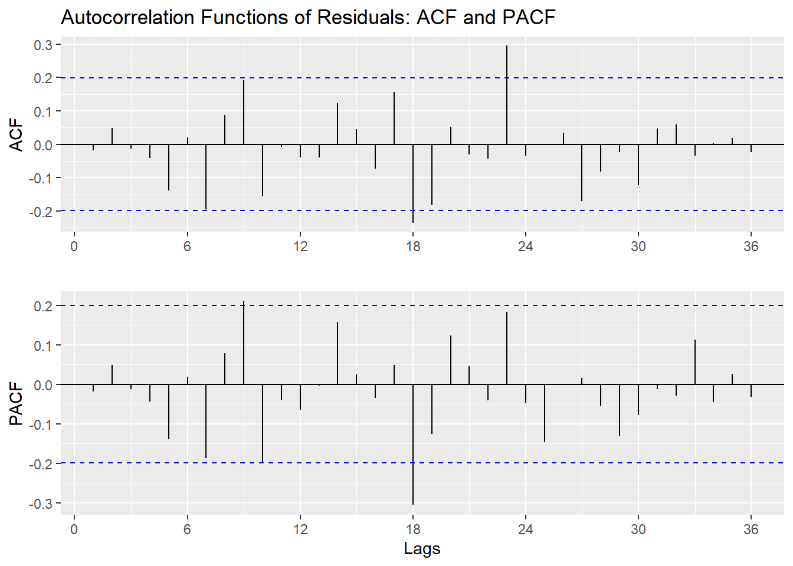
As well as the Ljung-Box test.
# A mable: 1 x 1
m312_002
<model>
1 <ARIMA(3,1,2)(0,0,2)[12]># A tibble: 1 × 3
.model lb_stat lb_pvalue
<chr> <dbl> <dbl>
1 m312_002 43.1 0.000469Residuals normality check
We seek to analyze by means of histogram, Q-Q plots and the Jarque-Bera test the assumption of normality of the residuals of the model.
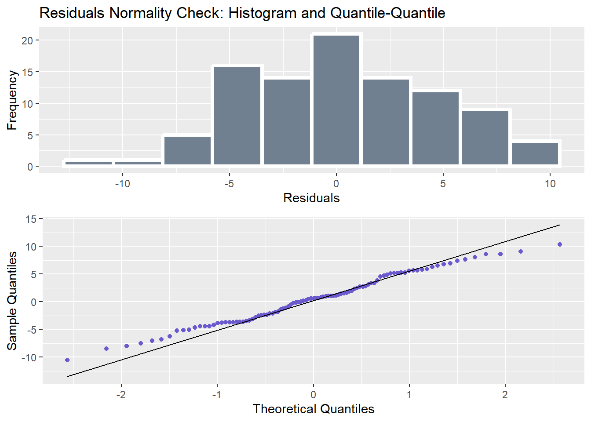
Jarque Bera Test
data: residuals$.innov
X-squared = 1.6021, df = 2, p-value = 0.4489Forecast Charts
The forecasts of the main models were plotted for comparison.
# Forecasting the Top 4 ARIMA Models
# ARIMA Models for Plotting
mod_arima_pg = mod_arima %>%
select(
`ARIMA(1,1,9)(0,0,2)[12]` = m119_002,
`ARIMA(3,1,2)(0,0,2)[12]` = m312_002,
`ARIMA(8,1,0)(0,0,2)[12] c/ tendencia` = m810_002_c,
`ARIMA(1,1,9)(1,1,0)[12]` = m119_110
)
# Plot Forecast vs. Actual values
graf_arima_4m = mod_arima_pg %>%
forecast(h = pap) %>%
autoplot(
serie %>% filter(Month >= yearmonth("2021-01-01")),
level = NULL
) +
labs(title = "Forecasting with ARIMA Models",x = "") +
theme(legend.position='none') +
facet_wrap(vars(.model), ncol = 2)
ggplotly(graf_arima_4m)Note: You can hover the cursor over the graph to see the values of each point.
Their confidence intervals were also plotted.
# Plotting individual models with confidence intervals
mod_arima_pg %>% forecast(h = pap) %>%
autoplot(
serie %>% filter(Month >= yearmonth("2019-01-01")),
lwd = 1.5,
) +
labs(title = "Forecasting with ARIMA Models", x = "",
subtitle = "80% and 95% confidence intervals") +
theme(legend.position='none') +
facet_wrap(vars(.model), scales = "free", ncol = 2)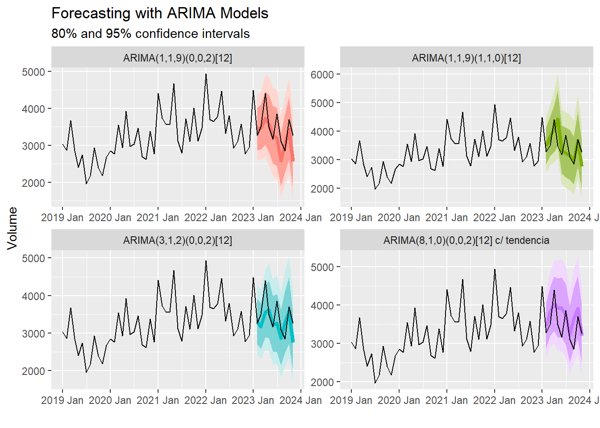
FORECASTING WITH STL DECOMPOSITION
Afterwards, the STL Decomposition model was reviewed, which uses the previously used method to decompose the series, to subsequently deseasonalize the series and apply a seasonal component by means of some other method, such as exponential smoothing (ETS). Since only one method is used, in this case we go directly to the residual analysis.
# Estimate Model (ETS)
mod_stl = train_data %>%
model(
dstl = decomposition_model(
STL(box_cox(Volume,lambda)), #Decomposition method
ETS(season_adjust), #Seasonally adjusted series
ETS(season_year) #Seasonal component
)
)Model Validation
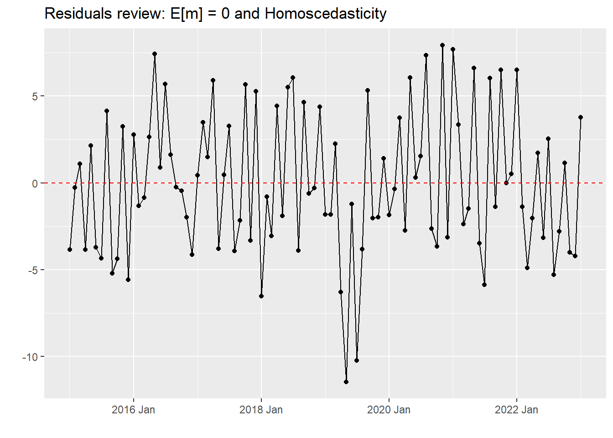
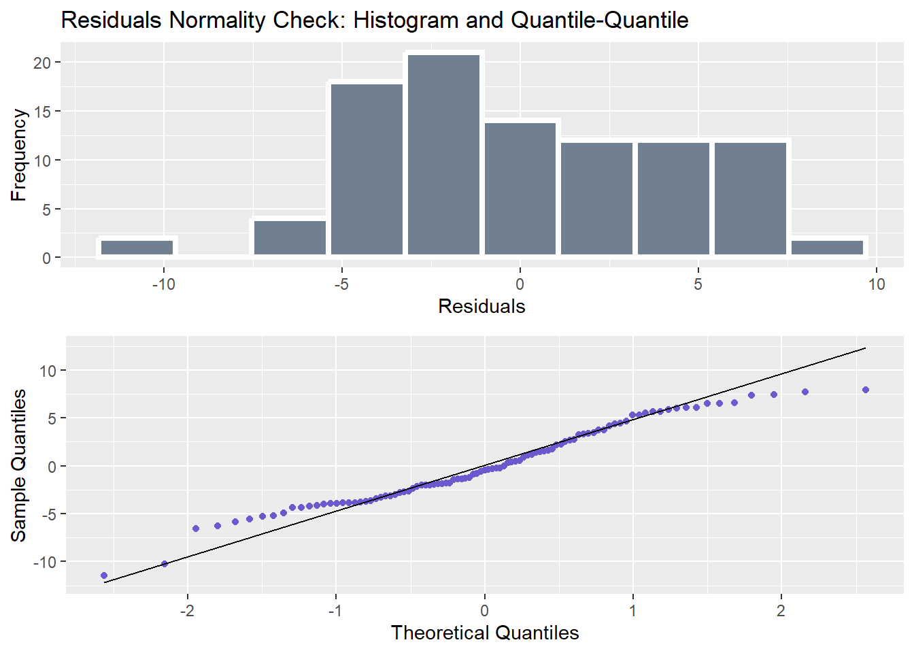
Jarque Bera Test
data: residuals$.innov
X-squared = 0.81585, df = 2, p-value = 0.665Forecast Charts
Forecasts are made with confidence intervals with the assumption of normality and Bootstrap.
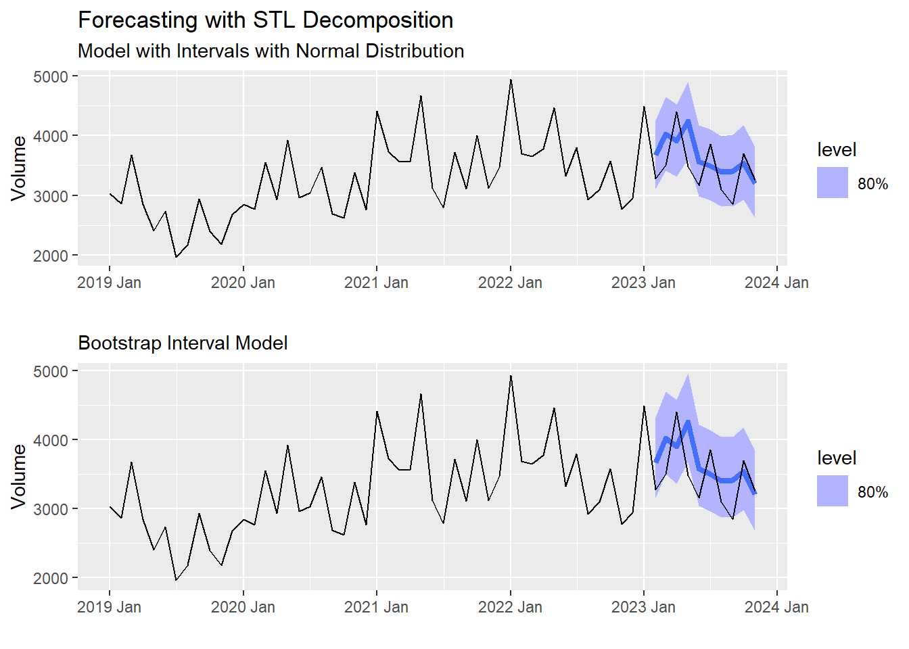
FORECASTING WITH PROPHET
Forecasts were also made with the Facebook Prophet model using different orders and looking at their accuracy to choose the best model.
# Estimating Models
set.seed(10)
mod_prophet = train_data %>%
model(
`Order = 10` = prophet(Volume ~ season(
period="year", order = 10, type = "multiplicative")),
`Order = 5` = prophet(Volume ~ season(
period="year", order = 5, type = "multiplicative")),
`Order = 3` = prophet(Volume ~ season(
period="year", order = 3, type = "multiplicative")),
`Order = 2` = prophet(Volume ~ season(
period="year", order = 2, type = "multiplicative"))
)
# Forecast Accuracy
mod_prophet %>% forecast(h = pap) %>% accuracy(test_data) %>%
select(.model,RMSE,MAE,MAPE) %>% arrange(MAPE)# A tibble: 4 × 4
.model RMSE MAE MAPE
<chr> <dbl> <dbl> <dbl>
1 Order = 10 748. 579. 17.8
2 Order = 5 738. 619. 18.9
3 Order = 2 761. 651. 20.0
4 Order = 3 788. 652. 20.1Once the best model has been identified, it is validated.
Model Validation
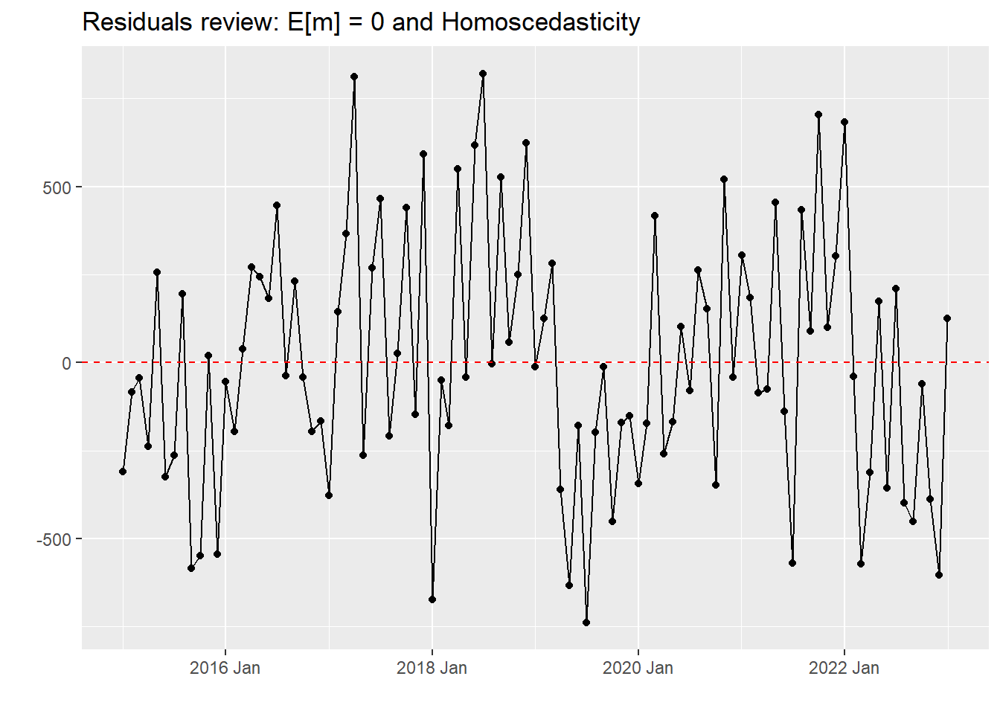
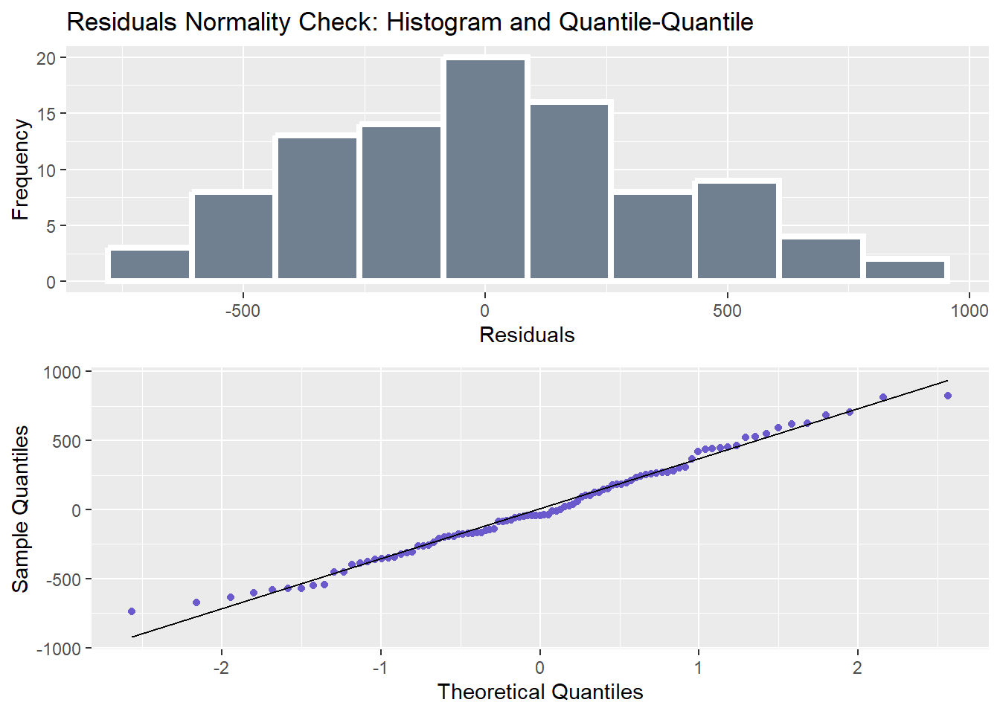
Jarque Bera Test
data: residuals$.innov
X-squared = 1.5829, df = 2, p-value = 0.4532Forecast Charts
The forecasts of the main models were plotted for comparison.
Note: You can hover the cursor over the graph to see the values of each point.
Forecasts are also performed to check the confidence intervals of each model.
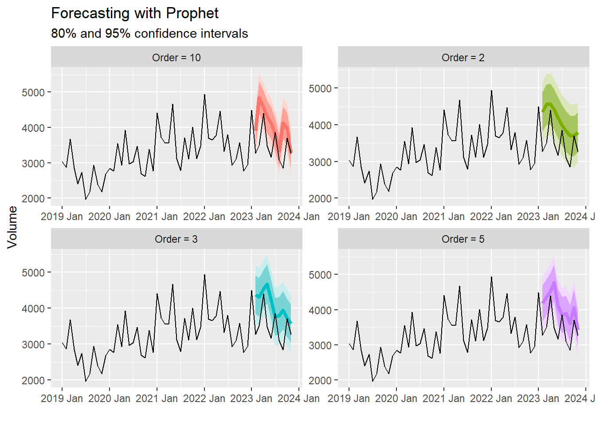
FORECASTING WITH NEURAL NETWORK AUTOREGRESSION (NNAR)
The Neural Network AutoRegressive Regression (NNAR) model is also reviewed to expand the options offered. For this model, different numbers of nodes are reviewed and their accuracy is reviewed to choose the best model.
# Estimating Models NNAR
set.seed(10) # set random numbers
mod_rn = train_data %>%
model(
`NNAR(10,1,2)` = NNETAR(box_cox(Volume,lambda),n_nodes=2),
`NNAR(10,1,3)` = NNETAR(box_cox(Volume,lambda),n_nodes=3),
`NNAR(10,1,4)` = NNETAR(box_cox(Volume,lambda),n_nodes=4),
`NNAR(10,1,6)` = NNETAR(box_cox(Volume,lambda),n_nodes=6)
)
# Forecast Accuracy
mod_rn %>% forecast(h = pap) %>% accuracy(test_data) %>%
select(.model,RMSE,MAE,MAPE) %>% arrange(MAPE)# A tibble: 4 × 4
.model RMSE MAE MAPE
<chr> <dbl> <dbl> <dbl>
1 NNAR(10,1,3) 363. 345. 10.1
2 NNAR(10,1,2) 379. 353. 10.5
3 NNAR(10,1,4) 404. 379. 11.0
4 NNAR(10,1,6) 467. 416. 11.9Once the best model has been identified, it is validated.
Model Validation
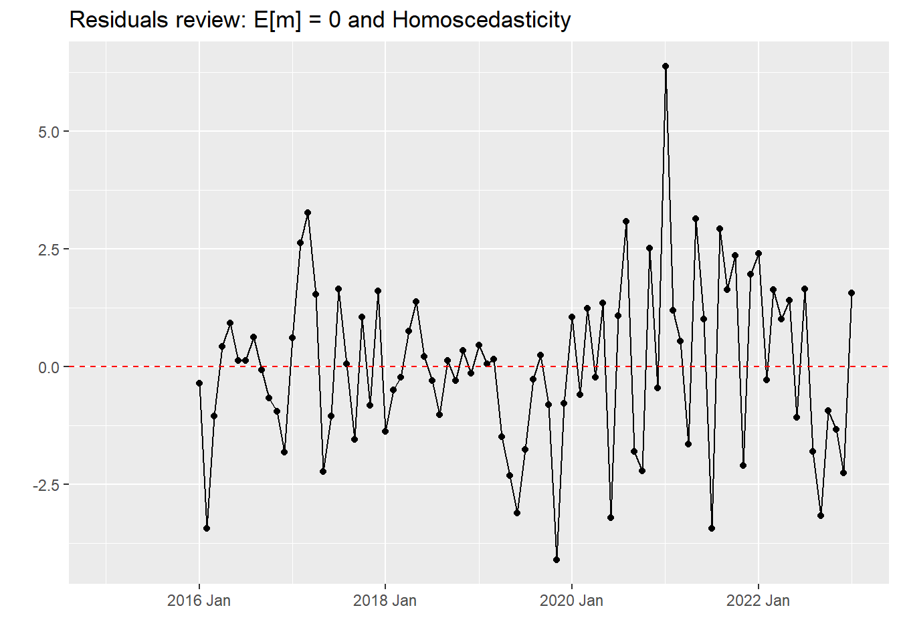
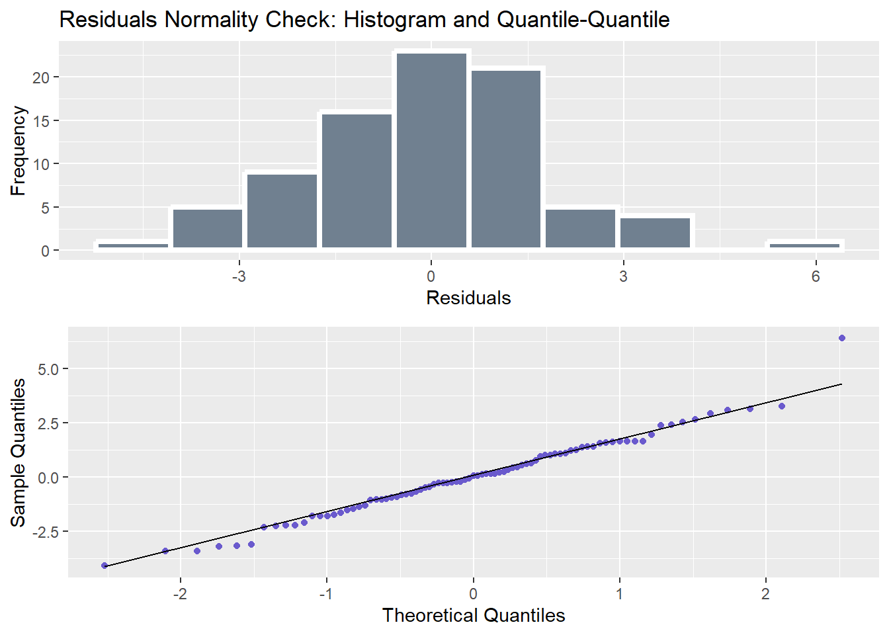
Jarque Bera Test
data: na.omit(residuals$.innov)
X-squared = 3.5995, df = 2, p-value = 0.1653Forecast Charts
Forecasts are made with confidence intervals with the assumption of normality and Bootstrap.
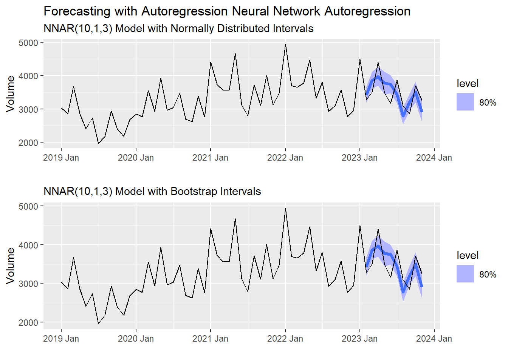
The forecasts of the main models were plotted for comparison.
Note: You can hover the cursor over the graph to see the values of each point.
Forecasts are also performed to check the confidence intervals of each model.
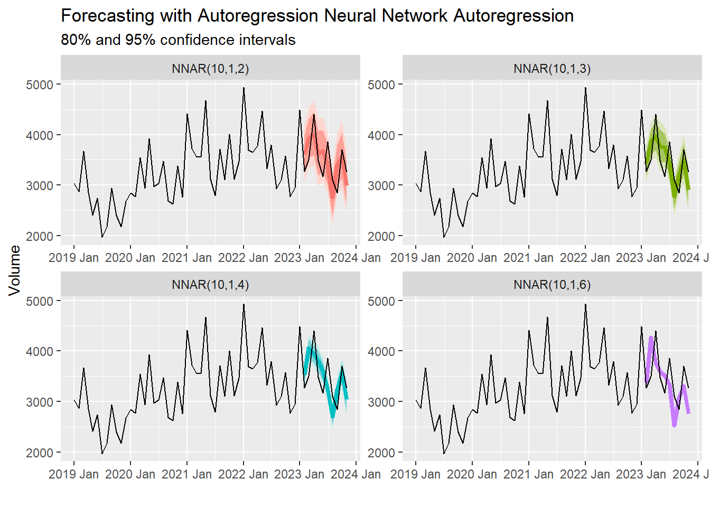
CROSS-VALIDATION
In order to perform a more complete evaluation of the point accuracy of the best models so far analyzed, a cross-validation is performed, which is a more sophisticated version of the training and test sets.
For this procedure it is necessary to first make an extended series to go through a window where the size of the training set will be increased to see the accuracy in different scenarios and obtain an average error of these to evaluate the accuracy of each model.
# Create extended series with index for Cross-Validation
serie_alargada = serie %>%
stretch_tsibble(.init = 80, .step = 10) %>%
filter(.id != max(.id))
# Models for cross-validation
set.seed(10)
mod_vc = serie_alargada %>%
model(
`Exp. Smo. ETS(M,Ad,M)` = ETS(Volume ~ error("M") + trend("Ad") + season("M")),
`ARIMA(1,1,9)(1,1,0)` = ARIMA(box_cox(Volume,lambda) ~ 0 + pdq(1,1,9) + PDQ(1,1,0)),
`ARIMA(3,1,2)(0,0,2)` = ARIMA(box_cox(Volume,lambda) ~ 0 + pdq(3,1,2) + PDQ(0,0,2)),
`STL decomposition` = decomposition_model(STL(box_cox(Volume,lambda)),
ETS(season_adjust), ETS(season_year)),
`Prophet` = prophet(Volume ~ season(
period="year", order = 10, type = "multiplicative")),
`Neu. Net AR (10,1,3)` = NNETAR(box_cox(Volume,lambda),n_nodes=3)
)
mod_vc %>% forecast(h = 10) %>% accuracy(serie) %>%
select(.model,RMSE,MAE,MAPE) %>% arrange(MAPE)# A tibble: 6 × 4
.model RMSE MAE MAPE
<chr> <dbl> <dbl> <dbl>
1 Exp. Smo. ETS(M,Ad,M) 500. 398. 10.6
2 ARIMA(3,1,2)(0,0,2) 541. 423. 12.4
3 Prophet 617. 500. 14.3
4 Neu. Net AR (10,1,3) 618. 527. 14.8
5 STL decomposition 613. 513. 15.0
6 ARIMA(1,1,9)(1,1,0) 648. 601. 17.3DISTRIBUTION ACCURACY
It is also important to analyze the accuracy of the confidence intervals of the implemented models, for which different ways of evaluating the models are shown. These models will be evaluated for 10-period forecasts.
We start with the Skill Score, which helps to rank the overall accuracy of the confidence intervals from best to worst, where the higher this score is, the more accurate the possible confidence intervals returned by the model will be.
# A tibble: 6 × 3
.model .type skill
<chr> <chr> <dbl>
1 Exp. Smo. ETS(M,Ad,M) Test 0.367
2 ARIMA(3,1,2)(0,0,2) Test 0.284
3 STL decomposition Test 0.228
4 Neu. Net AR (10,1,3) Test 0.173
5 ARIMA(1,1,9)(1,1,0) Test 0.166
6 Prophet Test 0.160The above table shows that the Exponential Smoothing model ETS(M,Ad,M) has the best overall accuracy, regardless of the confidence level. However, the evaluation can be customized according to different needs, such as specific confidence intervals, or prioritizing the lower or upper part of the interval.
On the other hand, the Winkler Score measures the accuracy for a given confidence level. The narrower the interval, the lower the Score. The more it misses the interval, the more it is penalized and the score increases. Therefore, the lower the Score the better. For example, for forecasts with a confidence level of 95%, the model that would show a better score would be the STL Decomposition Model, being the one that has the best balance between having a narrower range and not falling outside the range.
# A tibble: 6 × 3
.model .type winkler
<chr> <chr> <dbl>
1 STL decomposition Test 2514.
2 Exp. Smo. ETS(M,Ad,M) Test 2710.
3 ARIMA(1,1,9)(1,1,0) Test 2793.
4 ARIMA(3,1,2)(0,0,2) Test 2861.
5 Neu. Net AR (10,1,3) Test 3517.
6 Prophet Test 4477.Similarly, the Quantile Score may be useful if someone is more interested in not exceeding the lower or upper limit of the inteval. A specific score can be used for a given quantile. For instance, if someone’s priority is to satisfy a demand and not producing less than can be sold, a quantile of 1% can be used:
# A tibble: 6 × 3
.model .type qs
<chr> <chr> <dbl>
1 STL decomposition Test 20.4
2 ARIMA(1,1,9)(1,1,0) Test 22.1
3 ARIMA(3,1,2)(0,0,2) Test 25.5
4 Exp. Smo. ETS(M,Ad,M) Test 31.0
5 Neu. Net AR (10,1,3) Test 46.2
6 Prophet Test 90.9On the other hand, if someone’s priority was not to waste product and not to produce more than could be sold in order to avoid shrinkage, a 90% quantile can be used:
# A tibble: 6 × 3
.model .type qs
<chr> <chr> <dbl>
1 ARIMA(3,1,2)(0,0,2) Test 207.
2 Prophet Test 224.
3 Neu. Net AR (10,1,3) Test 235.
4 Exp. Smo. ETS(M,Ad,M) Test 236.
5 STL decomposition Test 241.
6 ARIMA(1,1,9)(1,1,0) Test 265.Forecast Interval Graphs
Finally, a comparison of the different forecasts for the next 10 periods is presented, showing their confidence intervals.
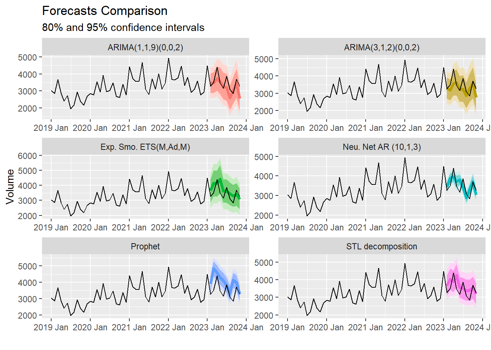
CONCLUSIONS
According to the particular needs different Models can be recommended. In general terms the Exponential Smoothing Model ETS(M,Ad,M) is the one that shows both a better point accuracy and a better confidence interval as measured by the Skill Score.
However, if a confidence level has been determined beforehand, for example 95%, the model with the best confidence interval would be the STL Decomposition Model measured by the Winkler Score.
Likewise, if what matters most is to satisfy a demand and not generate less than what might be needed, for example for a 99% confidence, the STL Decomposition Model would also be the best according to the Quantile Score for a 1% quantile.
On the other hand, if the main concern is not to generate more than what might be needed (as to avoid shrinkage), for example, for a 90% confidence level, the indicated model would be the ARIMA(3,1,2)(0,0,2) model according to the Quantile Score for a 90% quantile.